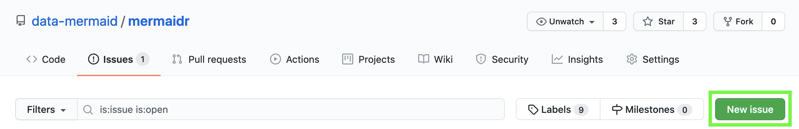

Getting help with mermaidr
getting_help.Rmd
knitr::opts_chunk$set(echo = FALSE)If you’re running into problems using mermaidr, please open an issue on the package’s GitHub repository, which is where the package code lives.
If you haven’t used GitHub before, you can create an account on the homepage:

Then navigate to the Issues page of the mermaidr repository, and click on “New issue”:

And describe your problem there!
It’s best to be as descriptive and detailed as possible when reporting a problem. The issue title should describe the problem that you’re having, and the main body should contain both the code that resulted in the problem, as well as output that illustrates the problem. Please include code and output in plain text, rather than a screenshot or photo of your code and console.
If you’re having issues with data from a particular project, please also include the ID of that project (you can find it in MERMAID Collect or from the output of the function that you ran to get projects, such as mermaid_get_my_projects()). This will enable us to help you as efficiently as possible!